던파 유니버스 CMS
던파 IP의 모든 이야기를
한 곳에서 운영하는 CMS
캐릭터/인물 설정, 클래스 관리, 콘텐츠 관리, 뉴스 관리 등 IP 운영에 필요한 영역 전반을
다루는 운영용 CMS입니다. 같은 캐릭터가 여러 게임에 걸쳐 다르게 등장하는 IP 특성을
한 화면에서 통합 관리할 수 있도록 설계했습니다.
웹에 익숙하지 않은 운영 담당자가 방향을 판단할 수 있도록 브랜드 사이트 시안을
시각화해 킥오프로 공유했고, 최종 디자인·퍼블리싱은 웹 에이전시와 협업했습니다.
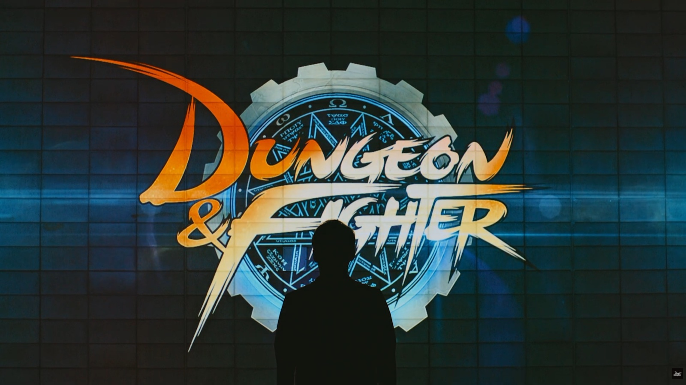
던파의 모험가는 게임마다 다르게 등장하지만 그들의 이야기는 결국
하나의 세계 안에 있습니다. 그 흩어진 조각을 한 곳에 잇는 확장 작업이었습니다.
기존 DFU 사이트는 스토리와 모험가를 모아두긴 했지만, 게임마다 다른 모험가와 스토리를 잇지 못해
유저의 흥미를 끌지 못했습니다. 기존 유저에게는 더 깊은 세계관을, 신규 유저에게는 자연스러운 진입점을
만들어 던파의 세계를 넓히려는 확장이었습니다.
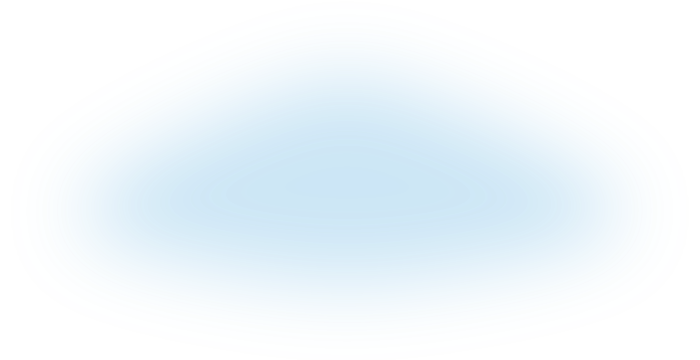
Problem DefinitionWho웹에 익숙하지 않은 운영 담당자는
Why여러 게임에 흩어진 캐릭터·클래스·콘텐츠를 매뉴얼 없이 다뤄야 하는데
Result방대한 정보 속에서 탐색이 어렵고 입력 누락 위험이 높은 상황
"내가 이 운영자라면"
모든 결정은 여기서 출발했습니다
정식 리서치 대신, 위 문제를 풀기 위한 세 가지 설계 기준을 세웠습니다.
"내가 이 운영자라면"이라는 1인칭 관점으로
학습 없이도 쓸 수 있는 화면을 기준으로 삼았습니다.
게임마다 다르게 등장하는 IP 특성을
정보구조에 그대로 담아 한 화면에서 다루게 했습니다.
영역이 달라도 같은 패턴으로 다룰 수 있도록
목록 → 상세 폼 → 발행의 흐름을 통일했습니다.
Information Architecture
캐릭터 관리, 클래스 관리, 콘텐츠 관리, 뉴스 관리 네 영역을 같은 패턴으로 구성했습니다.
각 영역은 목록 화면에서 상단 고정·발행 여부를 바로 제어하고, 상세 화면에서는 대표 정보와 게임별 패널로 나뉘는 모듈식 폼을 공유합니다.
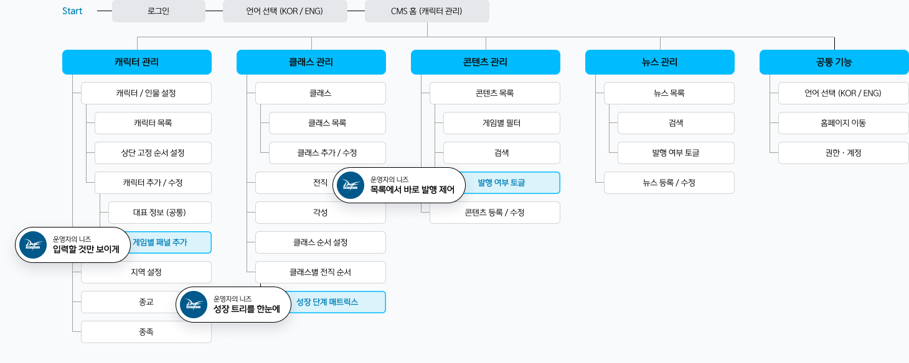
실제 서비스 구조를 기반으로 작성했으며, 일부 메뉴명은 일반화하여 표기했습니다.
게임별 등록 현황을 한 줄로 보고
노출과 발행은 목록에서 바로 제어
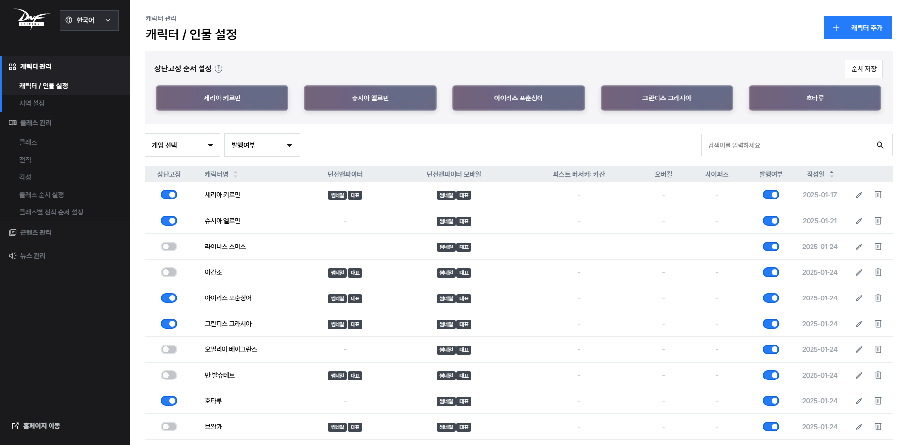
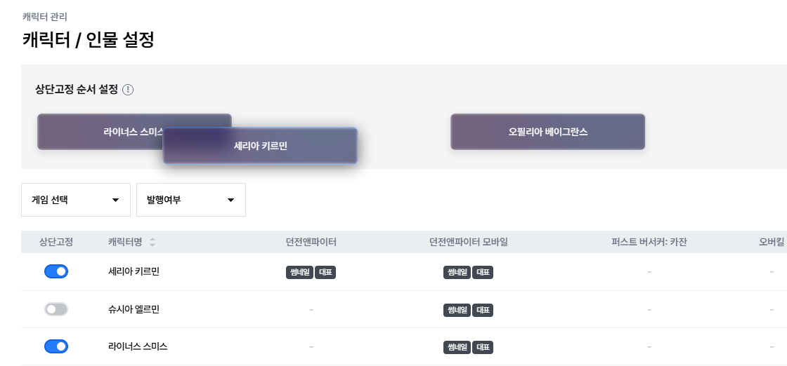
게임별 등록 현황 칩
던전앤파이터, 던파 모바일, 카잔, 오버킬, 사이퍼즈 컬럼마다 썸네일·대표 이미지 등록 여부를 칩으로 보여줍니다.
상단 고정 순서 설정
홈페이지 상단에 고정 노출할 캐릭터를 카드로 보여주고, 순서 저장 버튼으로 노출 순서를 바꿉니다.
고정 · 발행 토글
상단 고정과 발행 여부는 목록의 토글로 바로 제어합니다. 상세에 들어가지 않아도 노출을 관리할 수 있습니다.
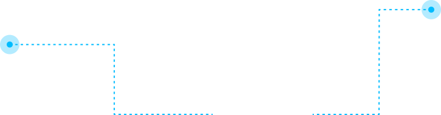
1차 → 2차 → 眞 각성까지
한 행에서 성장 트리 파악
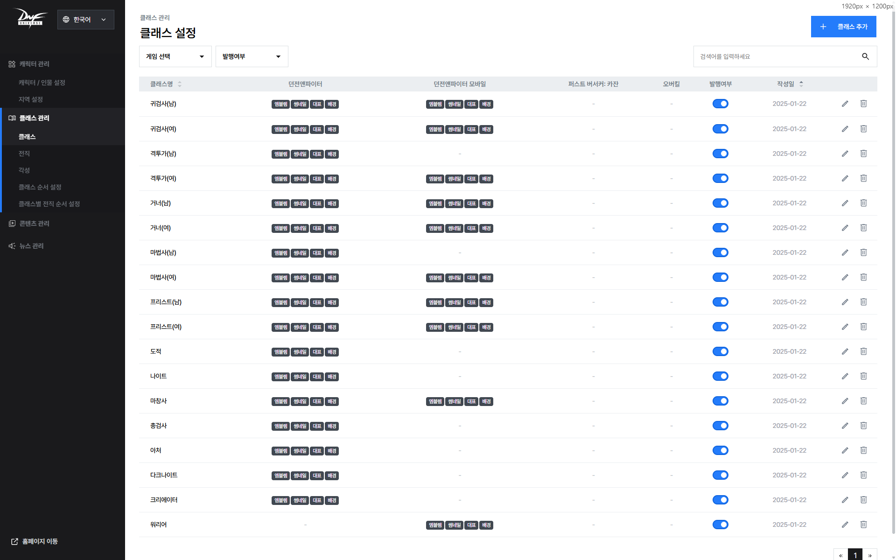
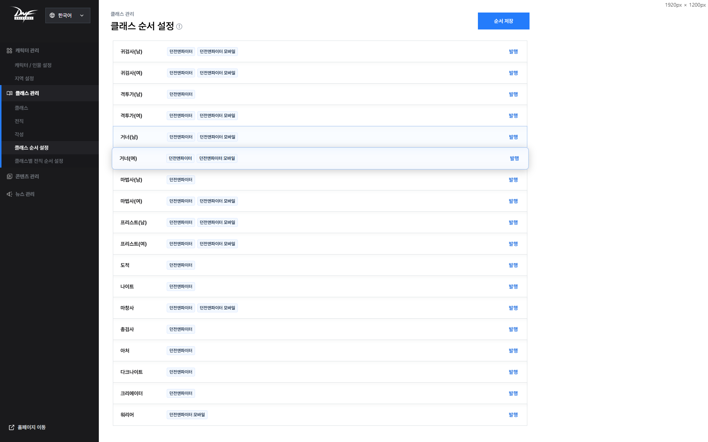
게임별 이미지 등록 현황
클래스마다 게임 컬럼별로 엠블렘 · 썸네일 · 대표 · 배경 이미지 등록 여부를 칩으로 보여줍니다.
클래스 순서 설정
클래스 순서는 별도 화면에서 드래그로 바꾸고, 순서 저장으로 홈페이지 노출 순서를 확정합니다.
입력할 것만 보이는
모듈식 캐릭터 입력 폼
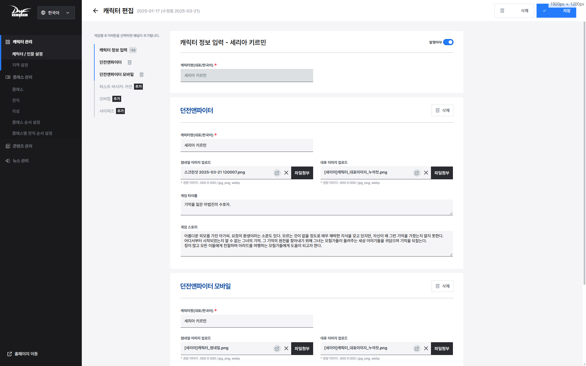
대표 정보 (공통)
캐릭터명, 설명, 대표 이미지 등 모든 게임에 공통인 정보를 폼 상단에 모아 먼저 입력합니다.
게임별 패널 추가
'추가' 버튼으로 등장하는 게임의 패널만 붙이고, 등장하지 않는 게임은 아예 보이지 않습니다.
폼 상단 안내 문구
구조를 설명하는 안내 문구를 상단에 두었습니다. 처음 본 운영자도 학습 없이 이해할 수 있습니다.
콘텐츠와 뉴스도
같은 패턴으로 운영
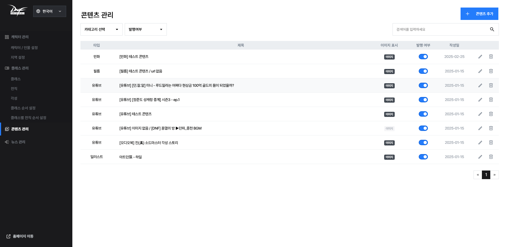
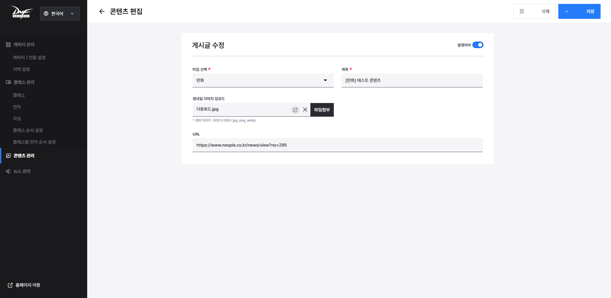
발행 제어
작성 · 검토 · 발행 승인 · 노출로 이어지는 흐름을 상태로 관리하고, 목록에서 발행 여부를 바로 켜고 끕니다.
매뉴얼 없이 운영할 수 있어 콘텐츠 등록부터 발행까지 빨라져요
운영자가 입력할 것만 보고, 어느 영역이든 같은 방식으로 다루게 되면 등록·발행 속도와 콘텐츠 운영의 정확도가 함께 올라갈 거예요.
정보구조모듈식
입력 패널하나의
운영 패턴
한눈에학습 없이
바로 운영
CMS가 운영할 화면을 먼저 그려
킥오프에서 방향을 맞췄습니다
운영 화면보다 브랜드 사이트 시안을 먼저 그려, 이 CMS로 무엇이 만들어지는지 눈으로 합의했습니다.
브랜드 사이트 프로토타입 보기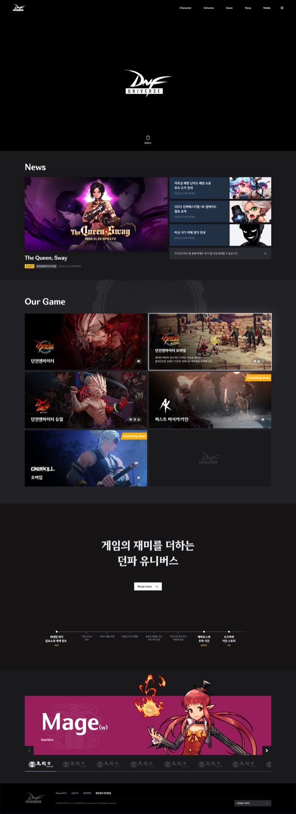
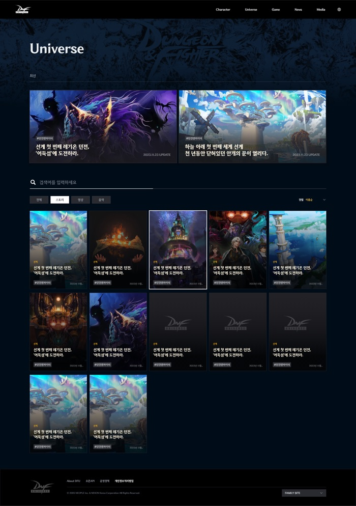
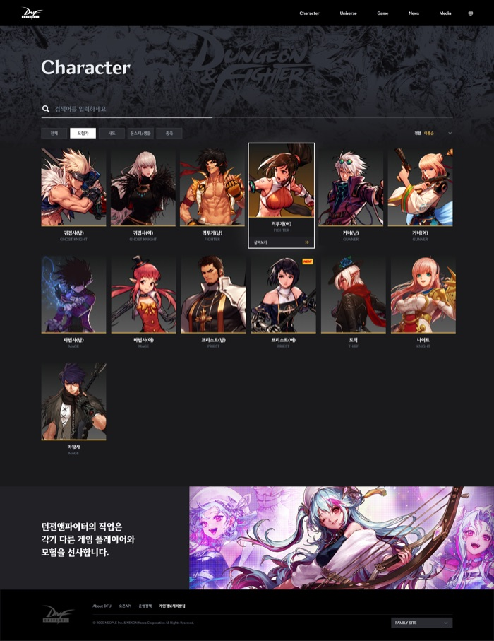
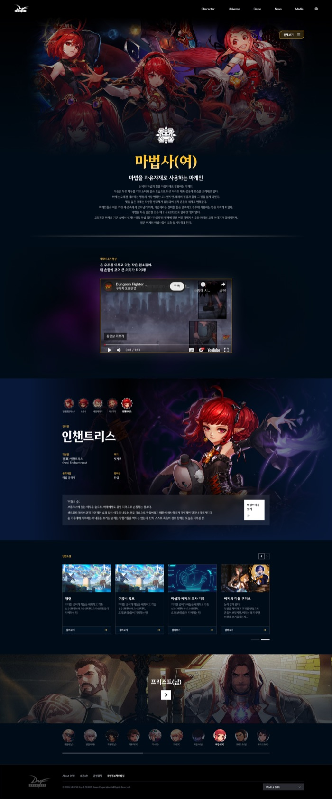
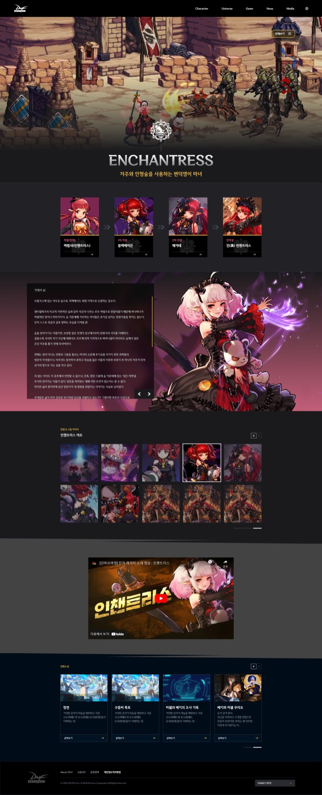
브랜드 사이트 시안 단계의 산출물이며, 최종 디자인 · 퍼블리싱은 웹 에이전시와 협업해 진행했습니다.
BlackRGB 26/26/28 Hex 1A1A1C
BlueRGB 36/124/251 Hex 247CFB
Light GrayRGB 235/238/241 Hex EBEEF1
WhiteRGB 255/255/255 Hex FFFFFF
던파 연마된 칼날
Aa123
DFU CMS,
Manage Simply
Structure Clearly
Operate Consistently
ABCDEFGHIJKLMNOPQ
RSTUVWXYZ
abcdefghijklmnopqrst
uvwxyz / 1234567890.:?!
@*&%?